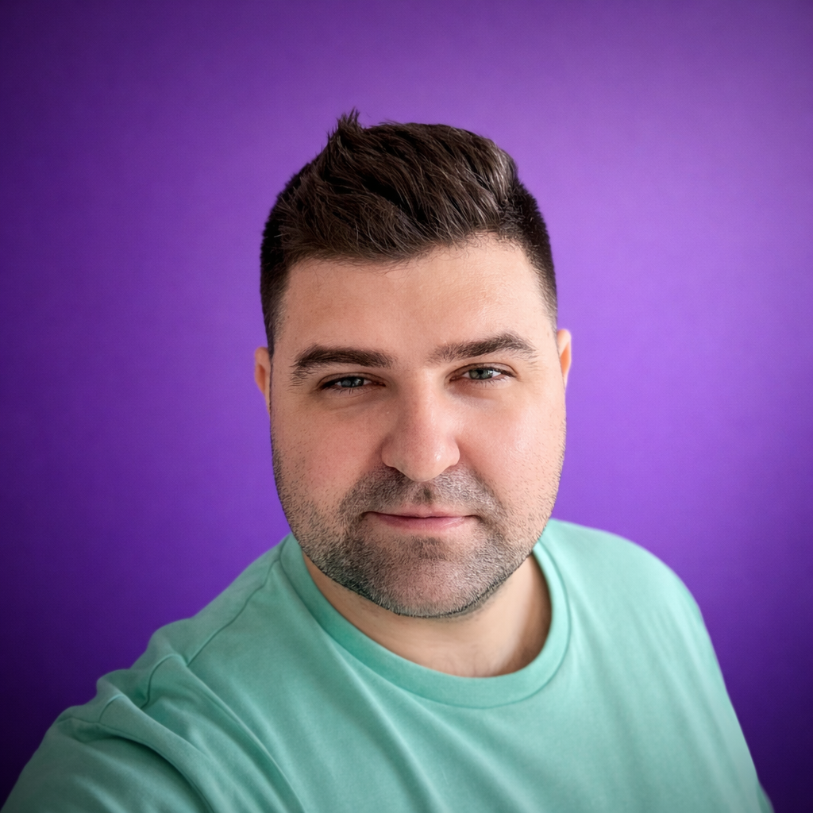

About
Twenty years in design, product, branding and everything between.
I started in web development, but design took over quickly and never let go.
I've been drawn to computers and visual creation for as long as I can remember. After graduating from Poznań University of Technology, I started my career in web development before going freelance and gradually shifting my focus toward design and branding. That technical background never left me — it's become one of my biggest assets, making collaboration with developers and technical leaders smoother and more effective.
After years of freelancing and running my own design consultancy, I moved into product design roles and naturally progressed toward leadership. Almost ten years ago, I joined Slideworx as Head of Design, coaching a team of designers through continuous product development. When we merged with mTab, I retained my role — unifying and evolving the UX of our products further. Today, my work sits at the intersection of design leadership, product strategy, and team growth..
Lately, I've been focused on bringing AI into our design process — not as a gimmick, but as a genuine way to work smarter. I believe AI-assisted design is where the industry is heading, and I want my team to be ahead of the curve
